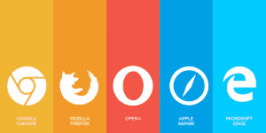

O que são navegadores
Um navegador de rede, navegador web, navegador da internet ou simplesmente navegador (em inglês: Web browser, browser), é um programa que habilita seus usuários a interagirem com documentos HTML hospedados em um servidor da rede.
